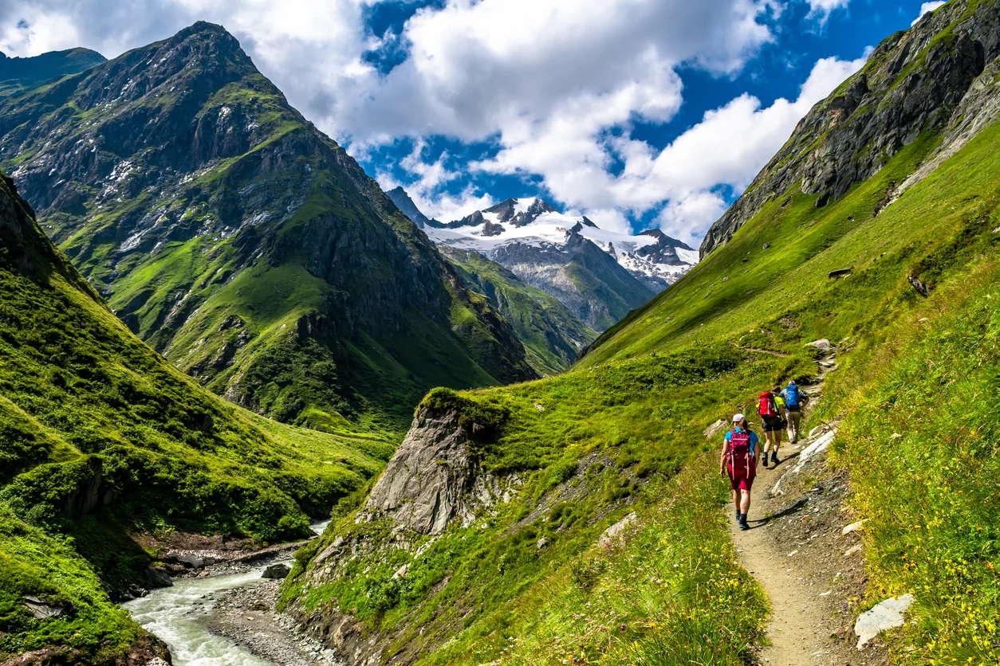
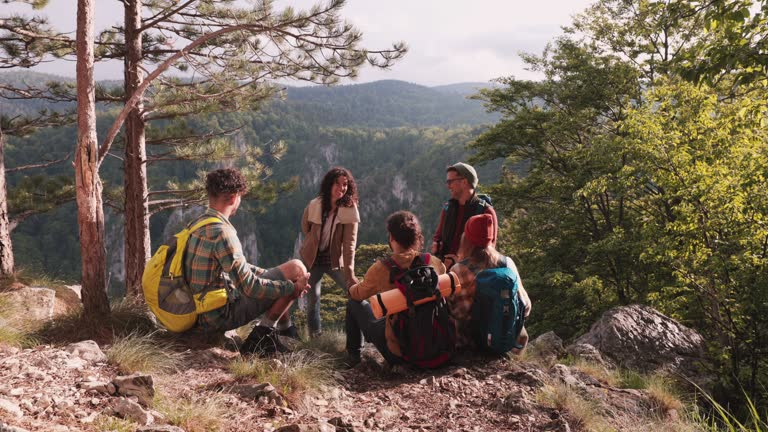
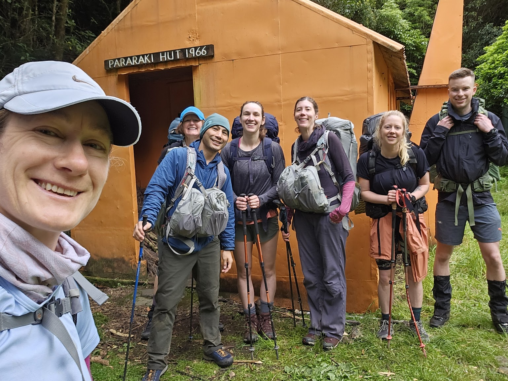

Summit Seekers is a South Island–based guiding service run by local outdoor enthusiasts who love sharing New Zealand’s mountain trails. We specialise in beginner-friendly hikes, personalised gear advice, and safe guided trips into some of the region’s most stunning landscapes. Whether you’re new to hiking or looking for support on a bigger adventure, we focus on safety, clear communication, and creating memorable experiences on every walk.
Our mission at Summit Seekers is to make New Zealand’s mountains accessible, safe, and enjoyable for everyone. We aim to help beginners build confidence on the trail, give clear and honest gear advice, and lead guided trips that respect the environment and local communities. Every hike we run is planned with safety, support, and a sense of adventure so people leave feeling proud of what they’ve achieved.


Summit Seekers began with a small group of friends who spent every spare weekend exploring the trails and peaks of New Zealand’s South Island. After helping family and mates choose gear and plan safe routes, we realised there was a need for simple, friendly support for people new to hiking. We turned that passion into a guiding service that focuses on small groups, clear communication, and building confidence step by step. Today, Summit Seekers is about sharing the places we love, helping others discover the outdoors, and making sure every trip feels achievable, safe, and memorable.
We’re working on expanding our range of trips while still keeping group sizes small and personal. Over time, we plan to add new routes, multi-day adventures, and seasonal hikes so people can experience the mountains in different ways. We’re also focused on improving our safety systems, training, and gear advice so every season we get better at supporting hikers of all levels.
If you’re new to hiking, our hiking guide is the best first step to build confidence on the trail. If you already have a trip in mind but need advice, book a Gear Consultation and we’ll help you choose the right equipment. Ready for a bigger challenge? Hire a Mountain Guide and we’ll plan a safe, memorable adventure together. Still have questions? Get in touch and we’ll help you figure out what’s right for you.